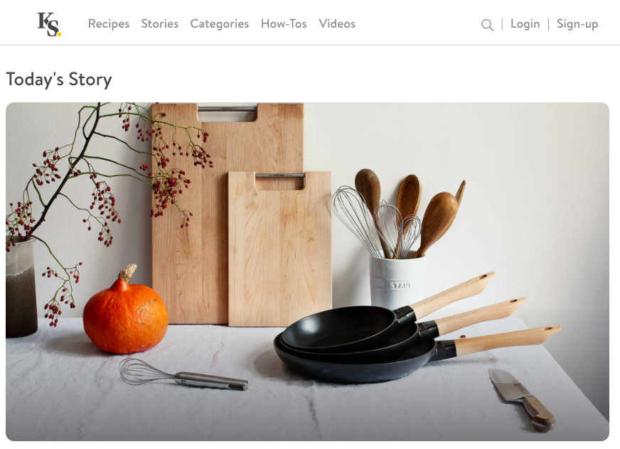

- Kitchen stories (Англоязычный проект по приготовлению различных блюд с видеоуроками/пошаговыми фото) 
- Российский проект «Мне вкусно» ( Поиск рецептов по категориям/ингредиентам/названию)
- Афиша-еда!
- Готовят все!
- Рецепты
- Patee.Recipe
- Belonika


Проект нацелен на упрощение приготовления еды и контроля продуктов, находящихся дома
Проект направлен в основном на молодых людей ведущих активный образ жизни, желающих придерживаться здорового питания. Также он нацелен на людей с базовыми кулинарными способностями, желающих максимально упростить процессы приготовления и закупки продуктов. В том числе проект нацелен на людей, которым не доставало «эстетичности» в аналогах.
Ее выбор дорогие полуфабрикаты в красивых коробочках. Ну, это если она и ее семья ужинают дома. Но лучше, конечно, в ресторане.Качество еды заботит ее меньше, чем качество одежды и косметики. Хотя, в принципе, хорошая еда - это такой же способ ухаживать за собой и своим телом. Если мы выбираем дорогую косметику и качественное белье, фитнес, бассейны и спа-салоны, то почему же допускаем на свою кухню магазинные пельмени, бульонные кубики, готовые соусы и прочий кулинарный мусор? Есть хорошая французская поговорка: Что не доплатишь мяснику - заплатишь аптекарю.
Ее выбор дорогие полуфабрикаты в красивых коробочках. Ну, это если она и ее семья ужинают дома. Но лучше, конечно, в ресторане.Качество еды заботит ее меньше, чем качество одежды и косметики. Хотя, в принципе, хорошая еда - это такой же способ ухаживать за собой и своим телом. Если мы выбираем дорогую косметику и качественное белье, фитнес, бассейны и спа-салоны, то почему же допускаем на свою кухню магазинные пельмени, бульонные кубики, готовые соусы и прочий кулинарный мусор? Есть хорошая французская поговорка: Что не доплатишь мяснику - заплатишь аптекарю.
Ее выбор дорогие полуфабрикаты в красивых коробочках. Ну, это если она и ее семья ужинают дома. Но лучше, конечно, в ресторане.Качество еды заботит ее меньше, чем качество одежды и косметики. Хотя, в принципе, хорошая еда - это такой же способ ухаживать за собой и своим телом. Если мы выбираем дорогую косметику и качественное белье, фитнес, бассейны и спа-салоны, то почему же допускаем на свою кухню магазинные пельмени, бульонные кубики, готовые соусы и прочий кулинарный мусор? Есть хорошая французская поговорка: Что не доплатишь мяснику - заплатишь аптекарю.
Ее выбор дорогие полуфабрикаты в красивых коробочках. Ну, это если она и ее семья ужинают дома. Но лучше, конечно, в ресторане.Качество еды заботит ее меньше, чем качество одежды и косметики. Хотя, в принципе, хорошая еда - это такой же способ ухаживать за собой и своим телом. Если мы выбираем дорогую косметику и качественное белье, фитнес, бассейны и спа-салоны, то почему же допускаем на свою кухню магазинные пельмени, бульонные кубики, готовые соусы и прочий кулинарный мусор? Есть хорошая французская поговорка: Что не доплатишь мяснику - заплатишь аптекарю.
Ее выбор дорогие полуфабрикаты в красивых коробочках. Ну, это если она и ее семья ужинают дома. Но лучше, конечно, в ресторане.Качество еды заботит ее меньше, чем качество одежды и косметики. Хотя, в принципе, хорошая еда - это такой же способ ухаживать за собой и своим телом. Если мы выбираем дорогую косметику и качественное белье, фитнес, бассейны и спа-салоны, то почему же допускаем на свою кухню магазинные пельмени, бульонные кубики, готовые соусы и прочий кулинарный мусор? Есть хорошая французская поговорка: Что не доплатишь мяснику - заплатишь аптекарю.